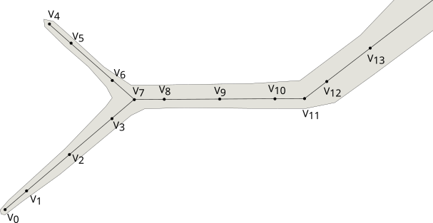
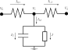

Cable Equation
Note
NEURON has a sophisticated system for allowing users to describe the geometry of neurons. Here we’ll try to derive the equations in a manner that hides those details whenever they’re not relevant to NMODL. Please consult its geometry related documentation or one of its publications, e.g. The NEURON Simulation Environment.
In order to derive the cable equations we model a neuron as an electrical circuit. We first pick points along the neuron at which we model the voltage. We’ll call them nodes and connect the nodes to form a graph. At every branch point we place a node, see Figure 1.

Figure 1: Illustration of the placement of node along a neurite.
Two adjacent nodes are connected by a resistor. The interesting behaviour comes from a difference in ion concentrations across the membrane. This difference is upheld by three processes: a) the membrane which is largely impermeable to ions, effectively creating a barrier for ions; b) (voltage-gated) ion channels that conditionally allow ions to quickly cross the membrane; and c) ion pumps which continuously pump ions across the membrane to restore a resting state.
The fact that the membrane is (mostly) impermeable to ions means that it behaves like a dielectric material and can therefore be modeled by a capacitor. The ion pumps and channels we simply model by a current \(I\).
This model gives rise to the circuit shown in Figure 2.

Figure 2: Illustration of the circuit near one node. The total trans-membrane current is \(I_M\), the current due to the dielectric property of the membrane is \(I_C\), and all mechanism specific currents are represented by \(I\).
We can start writing down equations. Let’s recall the formula for a capacitor and Ohm’s Law:
Using Kirchoff’s Law we can write down two equations for the trans-membrane current:
which leads to
which can be rewritten in terms of the voltage as follows:
This can be discretized by implicit Euler:
We collect terms as follows:
The unpleasant term is \(I(V_1^{n+1})\) since it makes the system non-linear. Therefore, it’s linearized as follows:
where \(g_i^{n}\) is the mechanism dependent (differential) conductance.